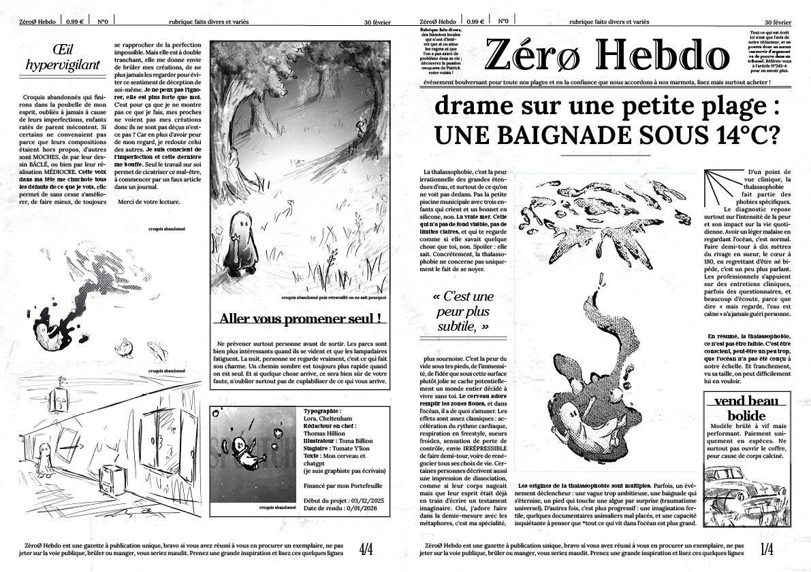
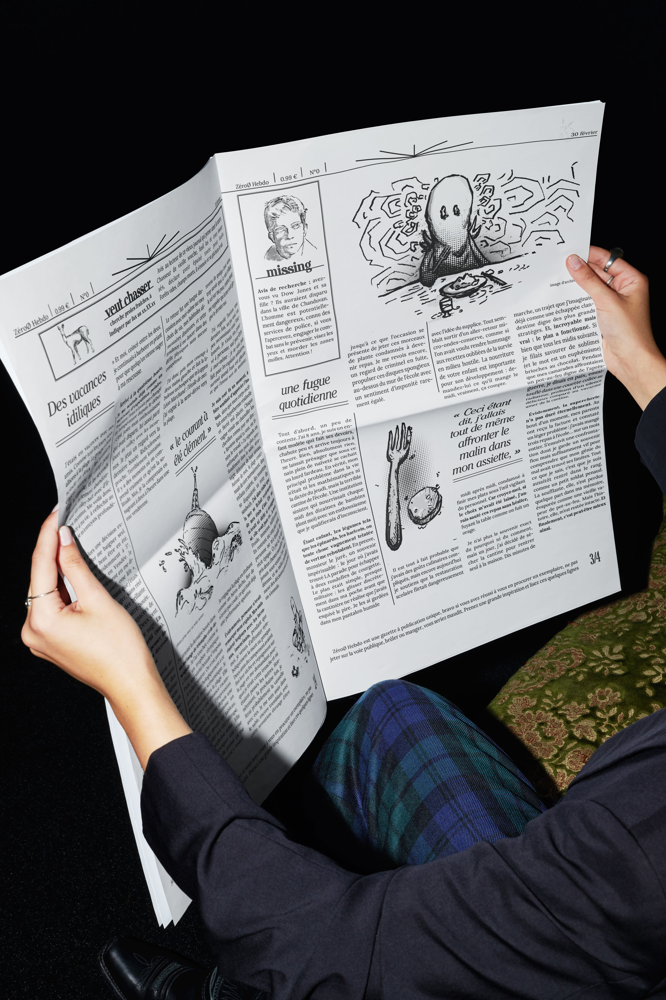
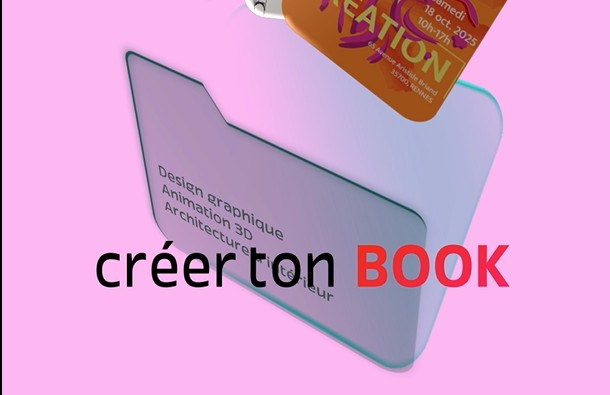
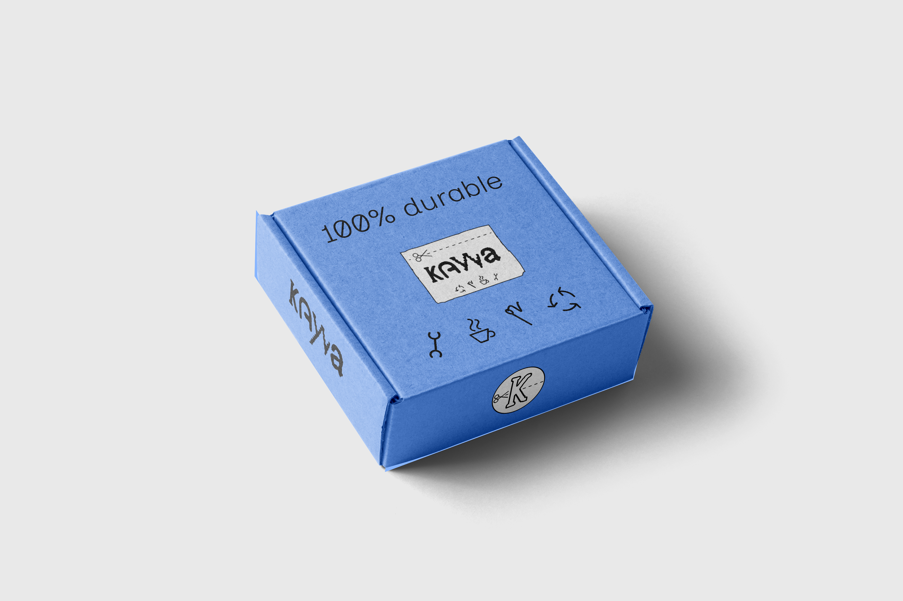
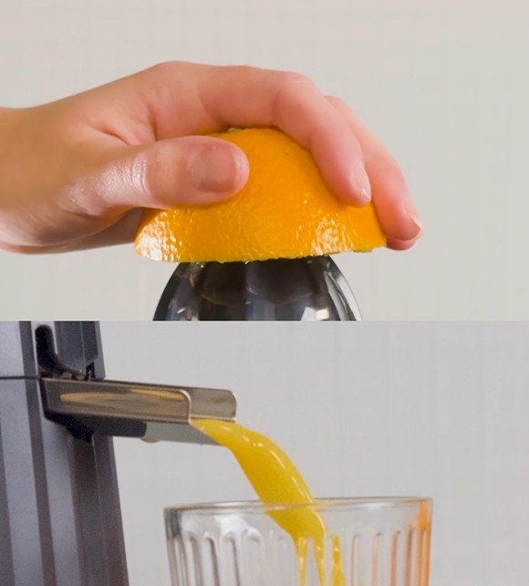
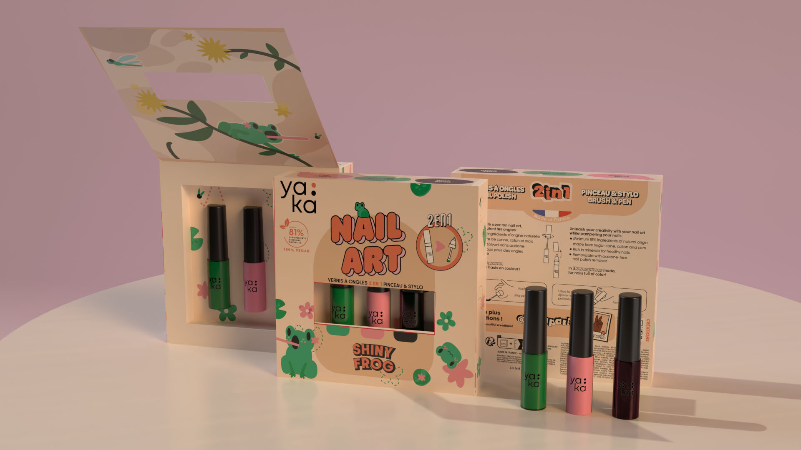
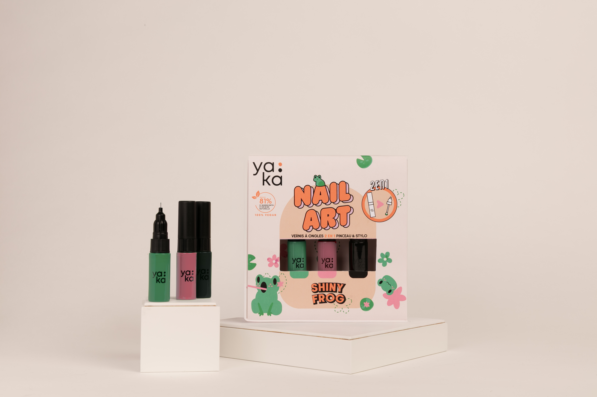

01 — 05
Projets sélectionnés
(01)
Hebdo — Mise en page et illustrations d'un journal

+


J’ai cherché à créer une identité forte pour ce journal hebdomadaire fictif, en m’inspirant des grands titres de presse du XIXᵉ siècle pour leurs hiérarchies complexes et leur approche fonctionnaliste de la mise en page. L’ambiance générale se veut lugubre, presque oppressante, avec des blocs de texte denses et de faux encarts publicitaires inquiétants. Les illustrations, réalisées à la main puis retravaillées numériquement, rythment la mise en page et renforcent l’identité visuelle du journal. L’ensemble repose sur une palette sombre, enrichie par des textures visant à vieillir le papier et accentuer l’aspect éditorial ancien.
Année
2025
Outils
Indesign · Photoshop
Catégories
(02)
Pub AGR - Motion Design

+
J’ai eu l’opportunité de réaliser une publicité pour mon école, dans le cadre d’un projet rémunéré, accompagné d’un binôme. Cette expérience m’a permis d’approfondir le processus de création en motion design, tant sur le plan du storytelling que dans la relation client et le travail en équipe.
Le principal défit était de faire rentrer un grand nombres d'informations et de visuels en peu de temps, ce qui a nécessité une gestion du rythme serré mais nécessaire.
Année
2026
Outils
After Effects
Catégories
(03)
Repair café - Identité visuelle

+



La direction visuelle de l’entreprise fictive Kawa visait à fusionner l’univers du café et celui du vêtement, dans une logique de Repair Café. Le projet s’appuie sur des valeurs d’inclusivité et de durabilité. J’ai porté une attention particulière à la hiérarchisation de l’information et au choix de typographies accessibles et lisibles.
Année
2025
Outils
Illustrator
Affinity Designer
Photoshop
Indesign
Catégories
(04)
Alessi - Captation vidéo - Montage

+
J’ai travaillé une colorimétrie chaude afin de mettre en valeur les fruits. Une attention particulière a été portée à la lumière et à la composition pour renforcer l’impact visuel de l’image. Le choix des cadrages associe fonctionnalité et intention graphique, avec des plans rapprochés mettant en avant certains détails afin de guider le regard.
Année
2025
Outils
Première Pro
Iphone 16 pro
Catégories
(05)
Yaka Paris - Packaging

+


.jpeg)
Projet en partenariat avec Yaka Paris autour de la création de nouveaux packagings pour leur gamme de produits de vernie pour enfants. En binôme, nous avons conçu deux propositions : l’une sur le thème de Noël, l’autre autour de la grenouille. Nos designs colorés et créatifs ont été sélectionnés par la marque pour leur originalité.
J’ai particulièrement travaillé le character design du petit animal afin de le rendre à la fois amical et attractif, ainsi que la création d’un ensemble de symboles graphiques venant enrichir et habiller le packaging.
Année
2025
Outils
Illustrator · Photoshop · InDesign · Adobe dimension
Catégories
02
À propos
Design fonctionnel,
esthétique assumée.
esthétique assumée.
Étudiant en graphisme, curieux et touche-à-tout, j’explore différents champs de la création visuelle, de l’illustration à au motion design en passant par l'édition. À l’aise avec l’informatique et les outils créatifs, j’aime apprendre, tester et construire des projets visuellement cohérents, sensibles et adaptés à leur intention. Mon approche mêle recherche technique et graphique.
Formation
Bachelor Designer Graphique
AGR, l'école de l'image — 2023 → en cours
Bac général et technologique
Lycée René Descartes
Formation au dessin et à l'illustration
Association les couleurs de Nouvoitou
Outils
Suite Adobe
Illustrator · Photoshop · InDesign · After Effects
Figma
Prototypage · UI
Suite Canva
Affinity · Cavalry · Canva
Langues
Français
Voltaire : 630
Anglais
TOEIC : 755
03
Contact